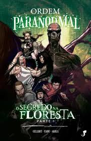

Início (Anos 90): No início, jogar RPG no Brasil era difícil porque os livros eram importados e caros. Isso mudou em 1994, quando a editora Devir traduziu oficialmente a 2ª Edição de Dungeons & Dragons para o português, abrindo as portas do hobby para os brasileiros. Nessa mesma época, nasceu o primeiro RPG 100% brasileiro de grande sucesso: Tagmar.
Era das Revistas de Banca: O RPG explodiu de verdade no Brasil quando começou a ser vendido em bancas de jornal através da icônica revista Dragão Brasil. Ela trazia sistemas simplificados (como o 3D&T), novas aventuras e dicas, tornando o jogo extremamente barato e acessível para qualquer jovem.
O Fenômeno Nerdcast e a Internet: Anos mais tarde, a internet mudou tudo. O grupo Jovem Nerd revolucionou o cenário nacional com o NerdCast RPG, criando audiodramas jogando dados que alcançaram milhões de ouvintes. Hoje, transmissões ao vivo (streams) e canais no YouTube mantêm o RPG brasileiro mais vivo e popular do que nunca.
E como menção honrosa como nao falar DELE um dos rpg mais jogado no brasil:
Ordem Paranormal é um RPG brasileiro criado por Rafael "Cellbit" Lange, ambientado em um mundo onde o sobrenatural é real e os jogadores assumem o papel de investigadores que enfrentam criaturas e mistérios. O jogo combina elementos de horror, aventura e investigação, oferecendo uma experiência única e envolvente para os fãs de RPG.

Atualmente, o projeto transcendeu as transmissões de vídeo e consolidou-se como uma franquia multimídia de grande sucesso comercial. O universo possui seu próprio sistema impresso publicado pela Jambô Editora, além de expansões contínuas e livros de regras. A marca também alcançou o mercado dos jogos eletrônicos com o lançamento de Enigma do Medo — desenvolvido pela Dumativa —, quadrinhos baseados nas temporadas iniciais e prepara o cenário para o futuro do hobby com novos testes e a continuação da linha principal, intitulada Calamidade Parte 2: Apocalipse.